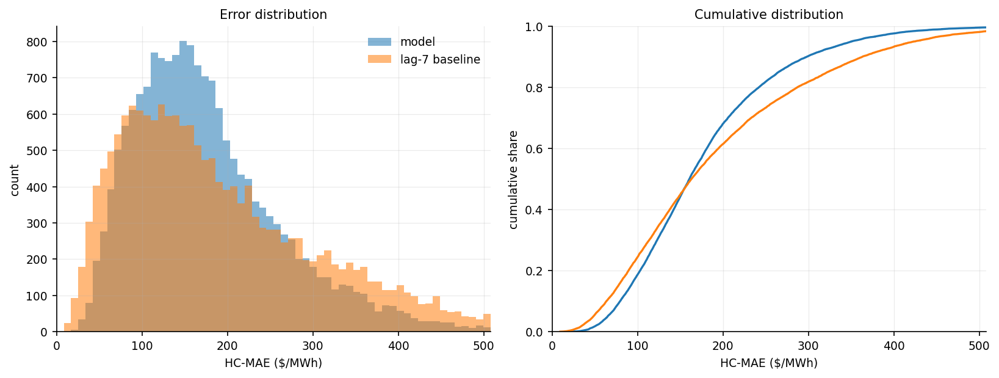
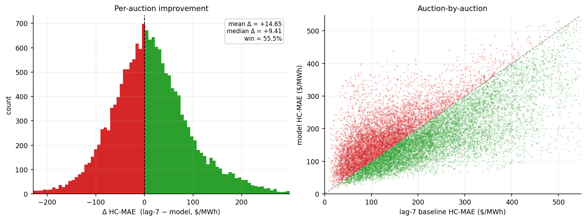
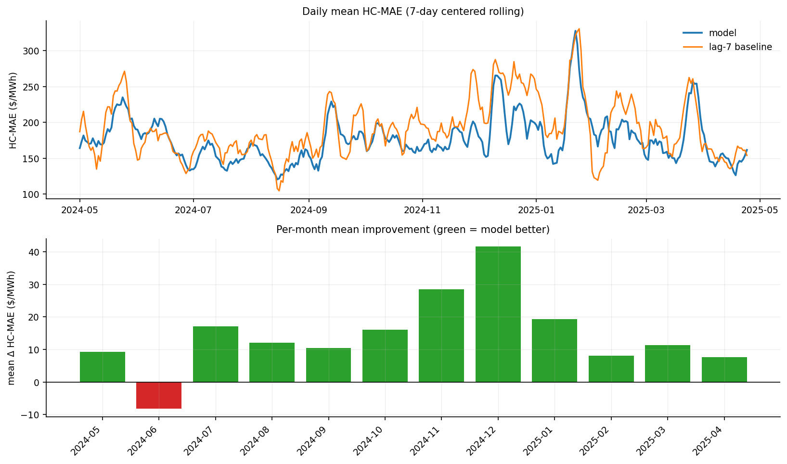
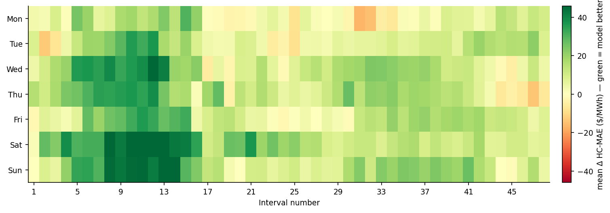
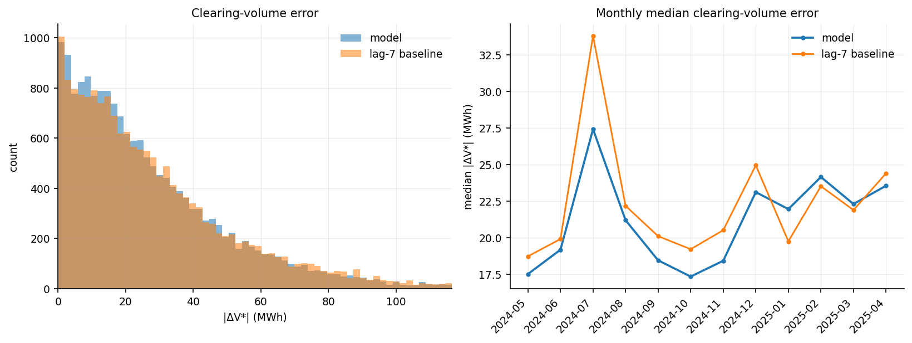
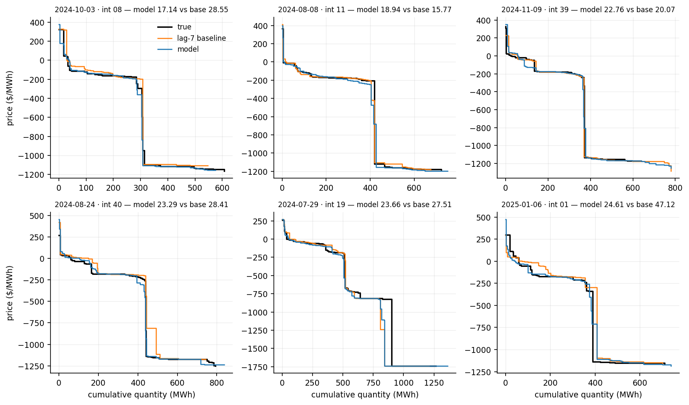
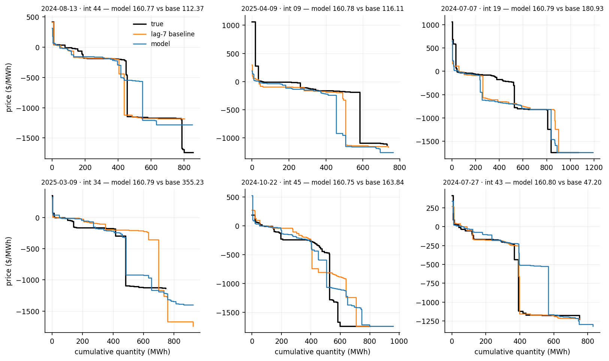
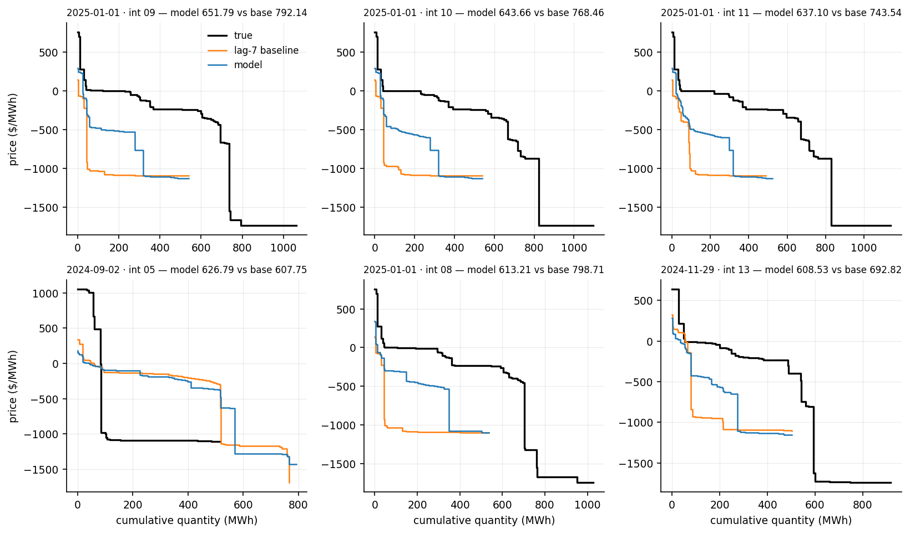

7-day-ahead · test 2024-05-01 → 2025-04-24 · 17,232 auctions · reference: lag-7 baseline
| This model | lag-7 baseline | |
|---|---|---|
| Mean HC-MAE ($/MWh) | 177.25 | 191.90 |
| Median HC-MAE ($/MWh) | 160.77 | 163.16 |
| Win % vs lag-7 | 55.5% | - |
| Mean |ΔV*| (MWh) | 27.50 | 29.23 |
| Median |ΔV*| (MWh) | 20.88 | 22.15 |
| Mean |ΔP*| ($/MWh) | 24.10 | 25.05 |
| Median |ΔP*| ($/MWh) | 2.74 | 3.09 |




The predicted residual curve is crossed with the $0 line, and the error is how far this moves the clearing point (V*, P*).
| This model | lag-7 baseline | |
|---|---|---|
| Mean |ΔV*| (MWh) | 27.50 | 29.23 |
| Median |ΔV*| (MWh) | 20.88 | 22.15 |
| Win % on |ΔV*| | 45.7% | - |
| Mean |ΔP*| ($/MWh) | 24.10 | 25.05 |
| Median |ΔP*| ($/MWh) | 2.74 | 3.09 |
A few price-floor auctions make the mean of |ΔP*| large, so the median is the summary.



